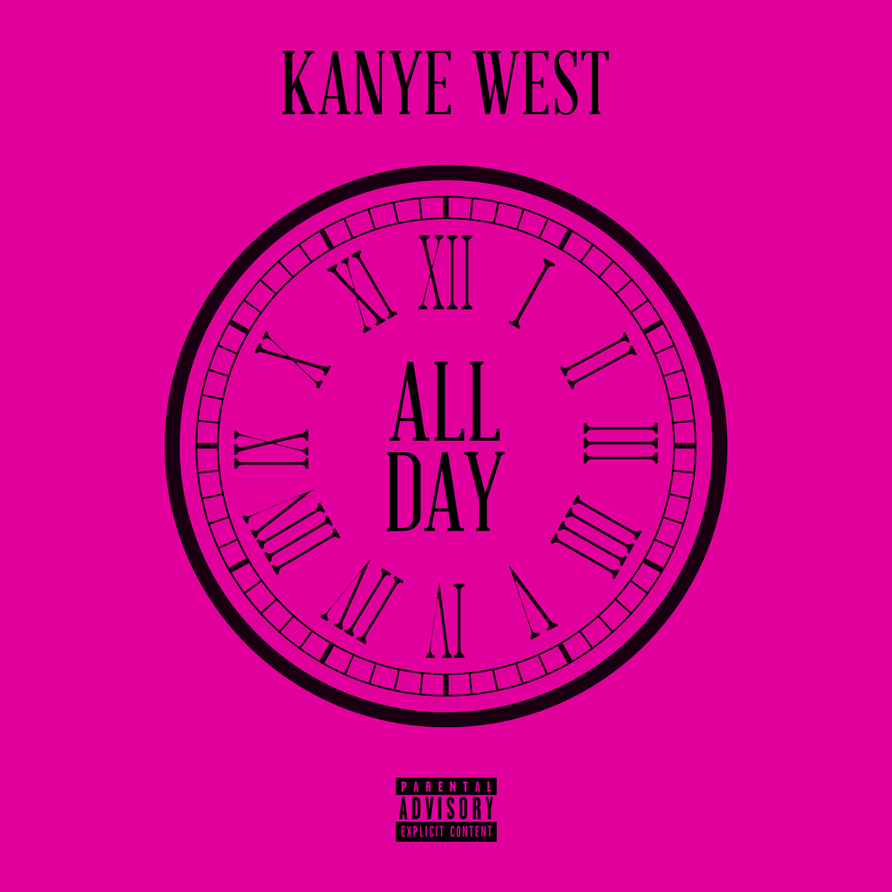
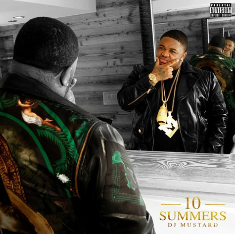

My name is Mason Lynaugh and I will occasionally be contributing to 333vinyl. My musical tastes include Ben’s, but are more concerned with the most recent developments in hip hop - whether it be drill, coastal, trap, or slip-hop - so I will focus mainly on what has been blaring through my speakers on its path to being overplayed. I’m planning on doing periodical entries under the terrible title “if we hung out” because “songs I would make you listen to if we hung out” was a bit worse, and the people who do hang out with me would attest to its accuracy.

Kanye West - All Day (Remake): A triumphant victory for the lovely people over at KTT (or KanyeToThe, a forum I endearingly refer to as the 4chan of hip hop) came the day in which someone announced they had a leak of the impending single from Kanye’s untitled seventh solo album. Ironically, this “leak” with the sound quality of something recorded on a graphing calculator triggered an infuriated Kanye to retreat back to Mexico and re-record for an album already rumored to be complete. Nonetheless, since I am part of that seeming minority that doesn’t mind Kanye’s rants, debauchery, or wife, and enjoys his music, I love this remake. Despite being full of mumbling, filler freestyle, unfinished lines, and of shoebox audio quality, it still bumps in the whip, dog.
{kind=link}
I LOVE MAKONNEN - I Don’t Sell Molly No More: ILM has recently received an unprecedented amount of attention for a singer who wails over beats churned out by ATL’s trap oligarchy while undeniably resembling a plush toy in appearance. This is result of current king of rap Drake remixing his fantastic song “Club Going Up On A Tuesday”. “I Don’t Sell” is a grimy gem amongst ballads about mutual infidelity from his self-titled EP, and is one of those songs that people “listen to as a joke” but show definite signs of enjoyment when it is played (think “Dolce and Gabanna”). I personally love ILM and look forward to his growth as an artist now that he has garnered some limelight a la Migos. No, I don’t care that you think he sounds like IceJJFish.
{kind=link}
Rustie - Attak (feat. Danny Brown): This is one of those songs that you may have already burnt out on if you’re a self-identifying “hip hop head”, into the contemporary EDM scene, or someone who lurks on Soundcloud. “Attak” marks the fourth collaboration between the two, and I see it as rivaling the incredible “Side B (Dope Song)" in quality. If you like Danny Brown, Rustie, Electronic music, and/or rap (that should be most everyone), this might tickle your pickle a little. Definitely a party starter up there with the Young Thug cut “Old English” (also a must-listen).

Face down (feat. Lil Wayne, Lil Boosie, Big Sean, YG): Say what you will about DJ Mustard, I stand by my position that he has carved a ubiquitous sound and is deserving of all success. Some may get annoyed by the “aye aye aye” and the way that he uses the same sample kit across his entire discography, but those sounds have some parasitic quality that will infect its way to the top 40. “Face Down” comes from his rudimentary debut album 10 Summers, yet is anything but. It’s a classic love story - “she like her ass tooted up and her face down” with yet another verse from a Lil Wayne who is making admirable progress in proving he’s still got it. However, the real standout here is Big Sean:
Oh my God, I’m in love with a porn star
I’m in love with a foreign car, they both topless
I done tricked off a gold Rolle wrist watch
Man, I’m tired of dealing with these h--- but my d--- not
Down On My Luck - Vic Mensa: By this point everyone knows Disclosure from “Latch”, but this Disclosure-produced song hasn’t gotten the love it deserves. I have trouble determining whether it’s alliance lies with EDM or rap, but those familiar with Vic Mensa know how his catalog dabbles in expansive sonic palettes. “Down On My Luck” is coupled with a clever Groundhog Day-inspired music video that serves as the cherry on top of one of my favorite jams for late drives.
Trae Tha Truth - Try Me (feat. Young Thug): I think Young Thug is the most interesting rapper making noise right now, and he is my second favorite rapper (behind Drake). He’s doing things that are just weird, and reaching commercial success where other oddballs like Lil B couldn’t. His charisma and shrill, drawling flow permeate through a song until he owns it whether he is “featured” or not. Case in point, “Try Me” shows Young Thug partnering with the typically forgettable H-town hero to craft a contender for banger of the year.